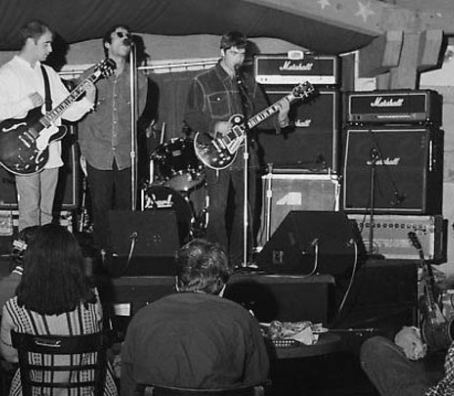

1991-ORIGIN
Paul McGuigan, Paul Arthurs, Tony McCarroll and Chris Hutton form a band called the Rain. Unsatisfied with Chris, they hired a new singer, Liam Gallagher. He later invited his older brother Noel, who was a roadie for Inspiral Carpets. Noel joined after agreement that he would be the main songwriter. Oasis was born.